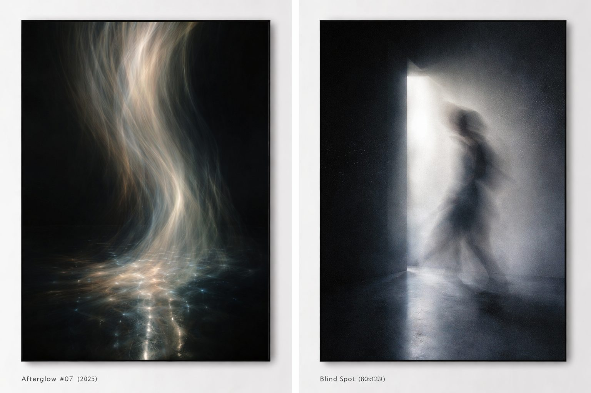
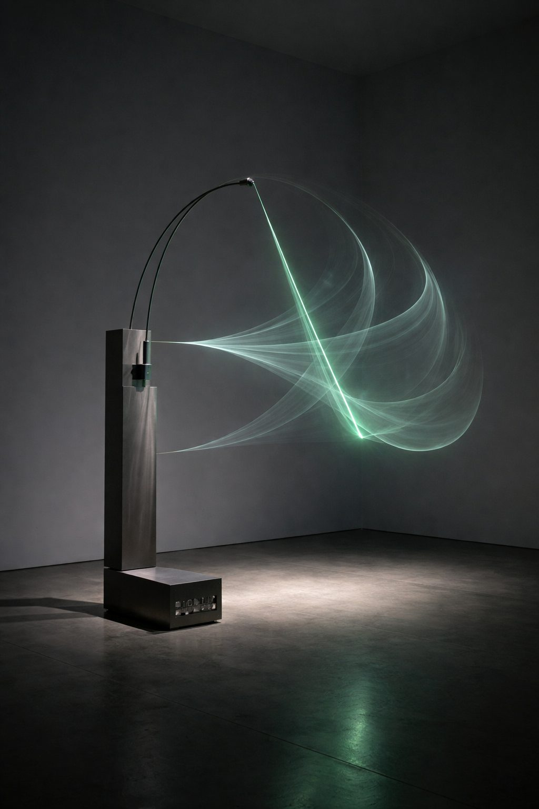
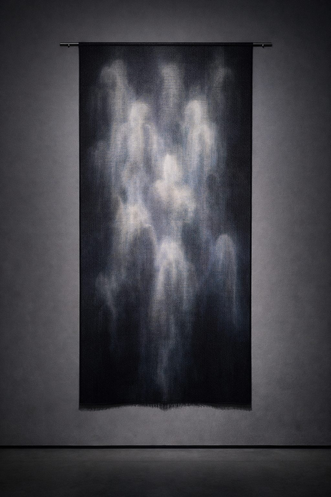
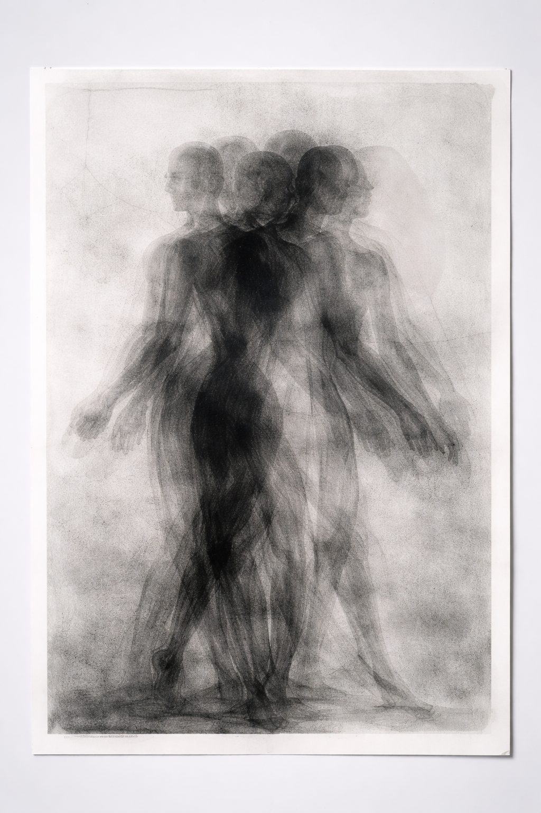
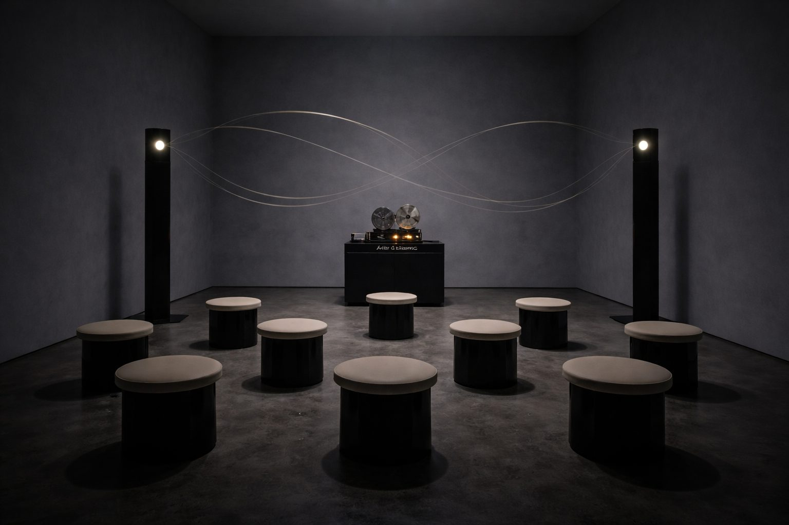

— 10年の残像。
GALLERY DOT 10周年。事前予約で来場された方に、記念マグをプレゼント。
事前予約＋当日チェックインで記念マグ1点(先着・日別在庫制)
光が去ったあとに浮かぶ像のように、創作の時差を見つめる展覧会。10年で出会った作家たちの新作・未公開作を中心に、記憶と物質が交わる瞬間を展示します。
写真、キネティック彫刻、テキスタイル、サウンド・インスタレーションなど、5名の作家によるジャンルを横断した新作を紹介。原宿・明治神宮前エリアで、10年分の「残像」をたどる特別展です。
参加アーティスト5名によるハイライト作品

PHOTOGRAPHY
折原 柚衣 Yui Orihara
《Afterglow #07》 2025, ラムダプリント＋UVレジン, 100×140cm

KINETIC SCULPTURE
NORI 野里 直
《Echo Pendulum》 2025, ステンレス・磁石・モーター, W120×D80×H210cm

TEXTILE
佐伯 凛
《weave_ghost 3》 2025, ジャカード織(シルク/和紙), 180×90cm

PRINTMAKING
Hanna K. 在ベルリン
《Residual Bodies》 2023, モノタイプ＋グラファイト, 70×100cm

SOUND INSTALLATION
境 直斗
《After Silence》 2025, 定在波スピーカー・テープループ, 可変 ／ ルームB・入場10名まで15分入替(撮影不可)
© Artist / Courtesy of GALLERY DOT
10周年記念マグカップ
事前予約のうえ、当日チェックインされた方に1名につき1点進呈します。色(ブラック／ホワイト)はお選びいただけない場合があります。
各日40個(色2種)／なくなり次第終了。特典は予約者本人のみ・転売禁止。
所在地
〒150-0001 東京都渋谷区神宮前1-2-3 DOT BLDG 1F
アクセス
JR「原宿」駅・東京メトロ「明治神宮前〈原宿〉」駅より徒歩圏内
会期
2026年1月10日(土)〜1月26日(月) 12:00-19:00(火曜休館)
バリアフリー
ベビーカー・大きな荷物は受付にてお預かりします(数量限定)。混雑時は入場制限を行う場合があります。
お問い合わせ
info@gallery-dot.jp ／ 03-0000-0000
AFTER IMAGE と、10年のキュレーション
2026年1月11日(日) 17:00–18:15 ／ 定員40名・要予約
登壇:佐伯奈央(GALLERY DOTディレクター)／水野圭太(参加作家)／久保田ミオ(美術批評)
10周年企画のテーマ背景と、10年間の表現の変化を語るオープニングトーク。
記憶・物質・イメージの残り方
2026年1月17日(土) 18:00–19:00 ／ 定員35名・展示来場予約者優先
登壇:森本紗英(参加作家)／高橋凌(建築家) 司会:佐伯奈央
素材選び・空間体験・鑑賞者の記憶に残る表現についてのクロストーク。
若手作家が語る“AFTER IMAGE”
2026年1月24日(土) 16:00–17:00 ／ 定員50名・当日参加可
登壇:山城遥／小林新／Chen Rui(リレートーク)
出展作家自身が"残像"の捉え方や制作過程を紹介。来場者とのQ&Aあり。
AFTER IMAGE / Light Trace
2026年1月18日(日) 18:30–19:10 ／ 定員30名・要予約
出演:NOA ISHIKAWA(光/空間パフォーマンス)／KEN OTOMO(サウンド)
光の残像と音の反復をテーマにした展示空間連動型ライブ。未就学児は保護者同伴。
Archive Body
2026年1月25日(日) 17:30–18:00 ／ 予約不要・当日観覧可
出演:牧村澪(パフォーマー/振付) 映像参加:井上湊
身体と記憶、展示空間内の移動と痕跡をテーマにした短編パフォーマンス。
2016
GALLERY DOT 開廊。「Dot Studies #01」シリーズ開始
2017
若手作家支援プログラム開始(年間3名)
2018
「New Vision Tokyo」企画 — Tokyo Art Directors Award 入選
2019
海外フェア初出展(Art Busan / Discoveries)
2020
オンライン・ビューイング開設(年間来場2.8万UU)
2021
キュレーション展「Shadow Index」(都美術館連携企画)優秀企画賞
2022
アーティスト・イン・レジデンス(新潟)開始／国内外5名招聘
2023
写真×彫刻の二人展「Edge After Edge」開催、図録が写真協会ブックアワード ショートリスト選出
2024
企業コレクション向けキュレーション5件(オフィス常設)
2025
10周年記念展「AFTER IMAGE」開催(本企画)
混雑時は予約優先・入場制限があります。特典は予約来場者のみです。
いいえ。特典は予約者本人のみとなります。
前日18:00までであれば、フォームの「予約変更」リンクから可能です。
当日中であれば、受付でスタンプを提示のうえ可能です。
可能です。未就学児は手をつなぐなど安全へのご配慮をお願いいたします。
・撮影は静止画のみ・フラッシュ不可・動画不可(一部作品は全撮影不可の掲示があります)。
・作品保護のため、作品から50cm以上離れ、展示什器・床のラインより内側に入らないようお願いします。
・大音量機器・三脚・自撮り棒・大型荷物のお持込みはご遠慮ください。
・撮影したお写真の商用利用は不可です(私的使用のみ・再配布禁止)。
・混雑時は入場制限を行う場合があります。
特典について
事前予約＋当日チェックインで記念マグ1点。色は選べない場合があります。日別在庫制・なくなり次第終了。転売禁止。
予約変更・キャンセル
前日18:00まで可能です。無断キャンセルが一定回数を超える場合、以後のご予約をお断りすることがあります。
個人情報
ご予約情報は予約管理・当日運営・お問い合わせ対応・統計分析に利用し、会期終了後90日で削除します(法令に基づく保存要件を除く)。ご同意時のみ、次回企画のご案内に利用します。
開示・訂正・削除
privacy@gallery-dot.jp までご連絡ください。
準拠法・管轄
日本法／東京地方裁判所
入力は1分・確認メールに予約番号をお送りします
ご予約を受け付けました
ご入力いただいたメールアドレス宛に、予約番号を含む確認メールをお送りします。当日は受付にて確認メールをご提示ください。